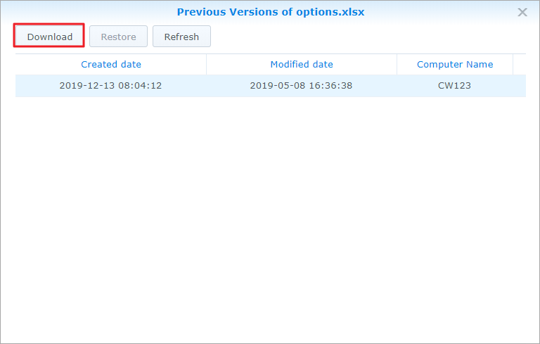

개요
Synology Drive Server는 전문 플랫폼 간 동기화 소프트웨어이자 사용자 PC에서 데이터를 스마트하게 백업하는 방법입니다. 데스크톱 유틸리티인 Synology Drive Client는 즉각적이면서 대역폭을 절약하는 실시간 백업 솔루션으로, 단일 파일에 기록 버전을 최대 32개까지 사용하여 뛰어난 보호 성능을 제공합니다.
Synology NAS에 Synology Drive Server 설정 및 Synology Drive Client 다운로드
- 패키지 센터로 이동하고 Synology Drive Server를 찾은 후 설치를 클릭합니다. Synology Drive 관리 콘솔, Synology Drive ShareSync 및 Synology Drive 등 패키지 세 개가 함께 다운로드됩니다.
- Synology Drive를 시작합니다. 오른쪽 아래 구석에서 Synology Drive Client를 다운로드하는 프롬프트가 표시됩니다.

또는 왼쪽 아래 구석으로 이동하여 사용자 아이콘을 클릭하고 클라이언트 > 클라이언트 다운로드로 이동합니다.

또는 Synology 다운로드 센터에서 Synology Drive Client를 다운로드할 수 있습니다. - 컴퓨터에서 설치 관리자를 시작하고 지침을 따라 Synology Drive Client를 설치합니다. 설치 후 지금 시작을 클릭하여 Synology Drive Client를 실행합니다.

- 백업 작업을 선택합니다.

- Synology Drive Server를 실행 중인 Synology NAS의 주소 또는 QuickConnect ID, 사용자 이름 및 패스워드를 입력합니다. 오른쪽에 있는 검색 아이콘을 클릭할 수 있습니다. 그러면 Synology Drive Client가 로컬 네트워크에 있는 모든 Synology NAS를 자동으로 검색합니다. 다음을 클릭합니다.

- 백업 원본을 선택하고 동기화하지 않을 하위 폴더 선택을 선택 취소합니다. Synology Drive Client에서 선택한 대상에 사용자 컴퓨터 이름을 가진 백업 폴더를 만듭니다. 기본적으로 home 폴더가 대상 폴더로 선택됩니다. 목록에 없는 폴더를 사용하려면 시스템 관리자에게 문의하십시오. 시스템 관리자는 Synology Drive 관리 콘솔 도움말 페이지를 참조할 수 있습니다. 또한 동기화 필터 또는 규칙을 설정하려면 백업 규칙을 클릭하면 됩니다. 다음을 클릭합니다.

- 백업 모드를 선택하고 다음을 클릭합니다.

- 백업 설정 요약을 검토합니다. 뒤로를 클릭하여 변경하거나 완료를 클릭하여 설정을 마칩니다.

- 주 창에서 백업 진행 상태를 확인할 수 있습니다.

Synology Drive Client에서 동기화된 파일의 이전 버전 다운로드 또는 복원
- Synology Drive Client에서 백업 작업 > 복원으로 이동하고 복원할 파일 또는 폴더를 찾습니다.

- 검색할 파일을 선택하고 이전 버전 찾아보기를 클릭합니다. 파일이 컴퓨터에서 실수로 삭제되거나 제거된 경우 복원을 클릭하여 파일을 복원할 수 있습니다.

- 다운로드할 파일 버전을 선택하고 다운로드를 클릭합니다.

Synology Drive 관리 콘솔에서 동기화된 파일의 이전 버전 다운로드 또는 복원
- DSM에서 Synology Drive 관리 콘솔 > 팀 폴더로 이동하고 복원할 파일이 저장된 폴더를 클릭한 후 버전 탐색기를 클릭합니다.

- 버전 탐색기 창에서 검색할 파일을 클릭하고 이전 버전 찾아보기를 클릭합니다.

- 다운로드할 파일 버전을 선택하고 다운로드를 클릭합니다. 또는 선택한 버전을 복원하려는 것이 확실하다면 복원을 클릭합니다. 복원된 버전이 현재 버전을 덮어씁니다.

데이터 추가 보호
데이터 보호 및 백업에 대한 자세한 내용은 여기를 클릭하여 DSM에서 제공하는 다른 백업 서비스 관련 자습서를 참조하십시오.